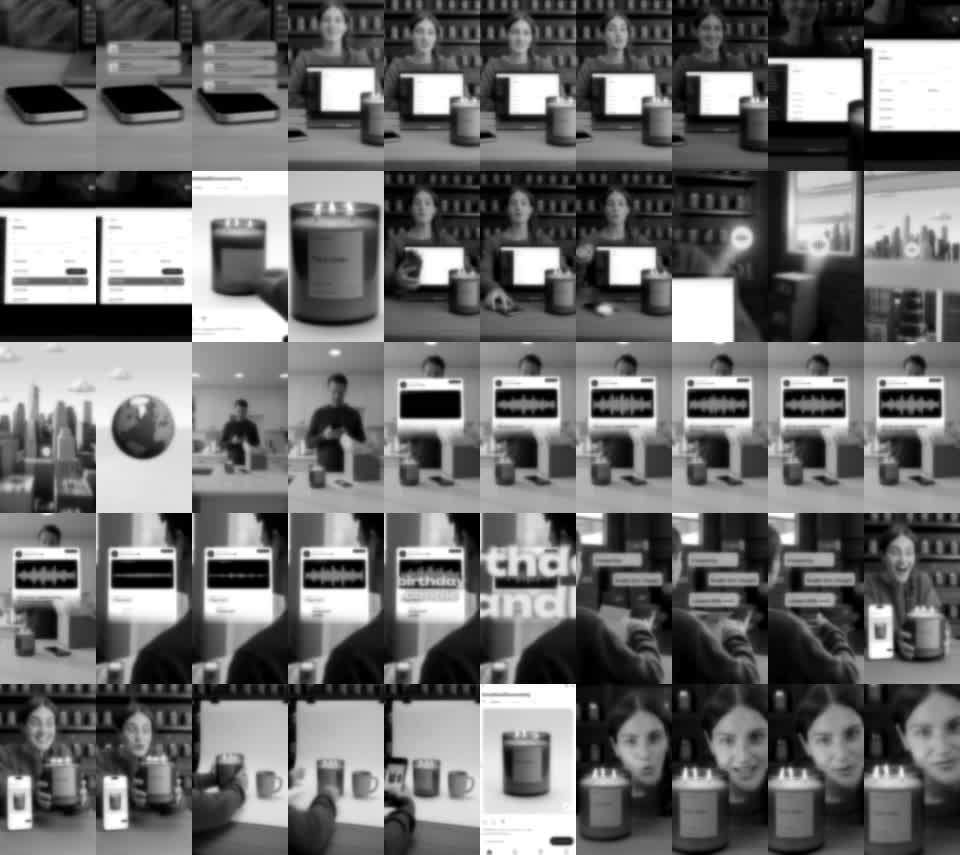

H228 · Seedance script E · The Dip as the skeleton · not rendered
Are these safe for cats?
A cat lady, her apartment full of white pillar candles, is about to buy the amber Fig & Cedar candle, but can't: the page never says if it's safe for cats.
In her head: “Are these safe for cats?” The page never says. She gets annoyed, closes the site: “I guess we'll never know.”
The camera flips from her down to the owner, at her desk, looking at Fig & Cedar's sales.
The owner surprisingly cuts the line on the wrong insight: “I guess no one's interested in Fig and Cedar. No one wants this. Time to discontinue the product line.” She blows out the candle.
Scout's voice: “Don't guess why your shoppers don't buy.” End screen: “Scout interviews your shoppers for you. Get free early access.”
Technique E: the whole film is cut to The Dip (H174), sent as a grey, blurred 25-second blockout (Video 1): Seedance takes only its cuts, shot sizes, camera moves and pacing. No High flip clip (that is D); the flip is written into The Dip's flight at 9-11 s. No ka-ching, no call scene.
Shot list · 30 s, on The Dip's cuts
Time
Who
What we see
Line
Assets
0-2 s
Shopper
Dip macro → her finger scrolling the Fig & Cedar page on her laptop.
(no line)
Image 1 Image 4 Video 1
2-4 s
Shopper · inner voice, lips closed
Dip medium, camera circling her on the sofa, cat beside her, white candles everywhere.
“Are these safe for cats?”
Image 1 Image 2 Image 3 Audio 1 Video 1
4-6 s
Shopper
Dip push-in over her shoulder: she scrolls down, up, down. Nothing about pets.
(no line)
Image 1 Image 4 Video 1
6-7 s
Shopper, cat
Dip's five flash cuts: Wax row, Burn time row, candle flame, the cat, her eyes narrowing.
(no line)
Image 4 Image 3 Image 1 Video 1
7-9 s
Shopper · inner voice, lips closed
Dip medium: annoyed, she closes the site and leans back.
“I guess we'll never know.”
Image 1 Image 3 Audio 1 Video 1
9-11 s
Camera
At the Dip's flight: the flip, written in words. Rises over her, flips over the sofa back, comes down in the owner's studio.
(no line)
Image 1 Image 6 Video 1
11-12 s
Owner
Dip wide: the owner at her desk, the Fig & Cedar jar lit.
(no line)
Image 5 Image 6 Image 8 Video 1
12-16 s
Owner
Dip medium: she reads Fig & Cedar in red on her laptop, then frowns.
“I guess no one's interested in Fig and Cedar. No one wants this.”
Image 5 Image 7 Audio 2 Video 1
16-18 s
Owner
Dip over-the-shoulder: from the red row to the jar.
“Time to discontinue the product line.”
Image 5 Image 7 Image 8 Audio 2 Video 1
18-21 s
Owner
Dip over-the-shoulder, then medium: she leans in and blows out the candle.
(no line)
Image 5 Image 8 Video 1
21-25 s
Scout · voice only
Dip inserts and punch-in: smoking jar, red row, her face behind the jar.
“Don't guess why your shoppers don't buy.”
Image 8 Image 7 Image 5 Audio 3 Video 1
25-30 s
Scout · end screen
The smoke dissolves into the usual Scout end screen.
“Scout interviews your shoppers for you. Get free early access.”
Video 2 Audio 3
What Seedance gets
Only these 13 files, in this order, plus the prompt below. 8 images, 2 videos (29.5 s), 3 voices (23.5 s). Nothing else on this page is sent.
Video 1 · The Dip skeleton, 25 s, grey blockout (a2/video1-dip-skeleton.mp4)
The technique: The Dip as the skeleton. Video 1 is The Dip (H174) turned grey and blurred. Seedance uses only its cut points, shot sizes, camera moves and pacing; never its look, people, rooms, phones, cards, orb or text. Each shape is mapped in the prompt: the figure at 2-9 s is the shopper, 11-25 s the owner, its jar the Fig & Cedar jar.

Every half second of Video 1 (illustration, not sent).
Image 1 · shopper (face, hair, cardigan only)Image 2 · her apartment: white pillars and tea lights, no jarsImage 3 · her catImage 4 · her screen: the product page
【Generation Goal】
Generate a warm, realistic film: a shopper is about to buy the Fig & Cedar candle but can't, because the page never says whether it is safe for cats; the owner, seeing only slow sales, surprisingly cuts the line on the wrong insight; Scout gives the lesson. Please note that this is not video editing.
【Reference Asset Roles】
@Image1 is the shopper: only her face, dark-brown bob with bangs and cream cardigan; not the room, candle, laptop or cat.
@Image2 is only the shopper's apartment: sofa, lamp, many lit white and cream pillar candles and tea lights; no jars.
@Image3 is only the shopper's grey tabby cat; not the sofa.
@Image4 is only the shopper's laptop screen: the Fig & Cedar product page; keep its layout and words.
@Image5 is the owner: only her face, auburn side braid and rust sweater; not the background.
@Image6 is only the owner's sunlit studio: brick, shelves, desk, laptop; not the tall labelled jar.
@Image7 is only the owner's laptop screen: her sales page with the Fig & Cedar row in red; keep its layout and words.
@Image8 is only the Fig & Cedar jar: short, wide amber glass, three wicks, kraft label, as on @Image4; not the fig leaves or linen. Only on her screen and in the studio.
@Video1 is a coarse-blockout reference, 0-25s. Use it only for cut points, shot sizes, camera moves and pacing; not its grey blurred look, people, rooms, phones, cards, orb, city, globe, mug or text.
@Video2 is only the end screen at 25-30s: picture, motion and on-screen words; not its audio.
@Audio1 is only the shopper's voice timbre; do not use its words.
@Audio2 is only the owner's voice timbre; do not use its words.
@Audio3 is only Scout's voice timbre; its words only at 25-30s.
【Blockout Mapping】
In @Video1: the desk phone at 0-2s is the shopper's laptop screen (@Image4), its notification cards unused; the figure at 2-9s is the shopper (@Image1), the laptop her laptop, the jar one of her white pillar candles; the 6-7s flash cuts are @Image4 rows, a candle, the cat and her eyes; the 7-9s phone and 9-11s orb, window, city and globe are unused, only the rising camera path kept; the man at 11-19s and the woman at 19-25s are both the owner (@Image5); the 12-18s waveform card and 18-19s chat bubbles are her screen (@Image7), their words unused; the 18-19s paper is unused; the jar at 19-25s is @Image8; the 19-22s phones and 21-22s mug are unused; the product page at 22-23s is @Image7.
【Subjects and Relationships】
Two women, never together. The shopper (@Image1) is only in her apartment (@Image2) at night, her cat (@Image3) beside her. The owner (@Image5) is only at her desk in her studio (@Image6) by day; the Fig & Cedar jar (@Image8) is the only jar on her desk. Scout is heard, unseen, until @Video2.
【Event Script】
Follow @Video1's cuts, shot sizes, moves and pacing, except where a shot names its own move.
0-2s, @Video1's macro: the shopper's (@Image1) finger scrolling her laptop screen (@Image4). At the end, the page mid-scroll.
2-4s, @Video1's medium, but the camera slowly circles her: the shopper (@Image1) on the sofa, the cat (@Image3) beside her, white candles all around. The shopper's inner voice (@Audio1), off screen, in English, lips closed, wondering: {Are these safe for cats?} At the end, behind her shoulder.
4-6s, @Video1's push-in over the shopper's (@Image1) shoulder into @Image4: she scrolls down, back up, then down again; nothing about pets. At the end, close on the Wax row.
6-7s, @Video1's five flash cuts: the Wax row; the Burn time row; a white pillar candle's flame; the cat (@Image3); the shopper's (@Image1) eyes narrowing. At the end, her eyes.
7-9s, hard cut, @Video1's medium: the shopper (@Image1), annoyed, exhales through her nose, closes the site and leans back beside the cat (@Image3). The shopper's inner voice (@Audio1), off screen, in English, lips closed, resigned: {I guess we'll never know.} At the end, she sits back, nothing bought.
9-11s, a flip along @Video1's rising camera path: the camera rises above the shopper (@Image1), flips over the sofa back until it fills the frame, and comes down into a different place, the owner's studio (@Image6). <a soft whoosh> At the end, above her desk.
11-12s, @Video1's wide: the owner (@Image5) at her desk, the jar (@Image8) lit beside her laptop. At the end, wide on her.
12-16s, @Video1's medium: the owner (@Image5) faces the camera, her laptop screen (@Image7) showing the red Fig & Cedar row; she reads it, frowns. The owner (@Audio2), on screen, in English, disappointed: {I guess no one's interested in Fig and Cedar. No one wants this.} At the end, her frown.
16-18s, hard cut, @Video1's over-the-shoulder shots: the owner (@Image5) looks from @Image7 to the jar (@Image8). The owner (@Audio2), on screen, in English, decided: {Time to discontinue the product line.} At the end, her eyes on the jar.
18-19s, @Video1's over-the-shoulder: the owner (@Image5) leans to the jar (@Image8). At the end, her face by the flames.
19-21s, hard cut, @Video1's medium: she blows out its three flames. <a soft breath> At the end, three thin trails of smoke.
21-25s, @Video1's inserts, then its punch-in: the smoking jar (@Image8); the red row on @Image7; then the owner's (@Image5) face behind the jar, lips closed. Scout (@Audio3), off screen, in English, calm, friendly: {Don't guess why your shoppers don't buy.} At the end, her face and the smoke.
25-30s: the smoke dissolves into the end screen, exactly like @Video2. Scout (@Audio3), off screen, in English, calm, friendly: {Scout interviews your shoppers for you. Get free early access.} At the end, @Video2's end screen.
【Sound and Text】
No ka-ching or notification sound. No subtitles. No on-screen words except in @Image4, @Image7 and @Video2.
【Maintain Consistency】
Keep each woman, the cat, both homes and the jar (@Image8) identical; the jar stays unlit after 21s. Each line ends in its shot.
Details
sd25-pe check: zero FAILs
Full Final Checklist, Principles 1-11, the coarse-blockout mapping by time range, the per-shot ledger and the exact dialogue ledger: SD25-CHECK.md.
How E differs from D (H227)
D sends a 5 s High flip clip for one transition. E sends The Dip's whole 25 s cut as a grey blockout and writes every shot onto its cuts.
Same story and the same six lines, word for word (Emile, Nov 15).
Emile, 2:02 PM: "I don't even see the Dip in the files being referenced." It is now Video 1.
Spend
None. One render would be a 30 s Seedance 2.5 draft at 480p (~90 credits), only after Emile's go.